Ambiente y Diseño del lugar
Más que un restaurante, hemos diseñado un espacio donde la calidez y el diseño se encuentran. Recorre visualmente nuestros salones, desde la intimidad de las mesas hasta el vibrante ambiente de nuestra barra. Cada detalle, desde la iluminación hasta la decoración, ha sido cuidadosamente seleccionado para garantizar que tu visita sea una experiencia completa de confort y belleza.
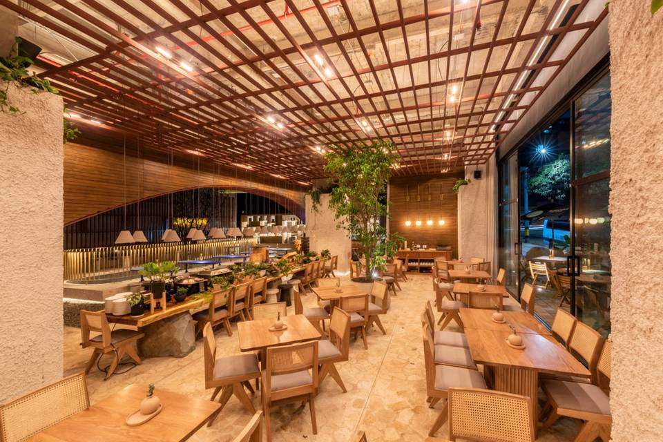 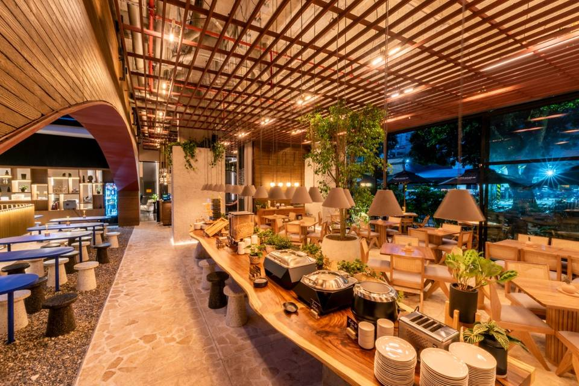 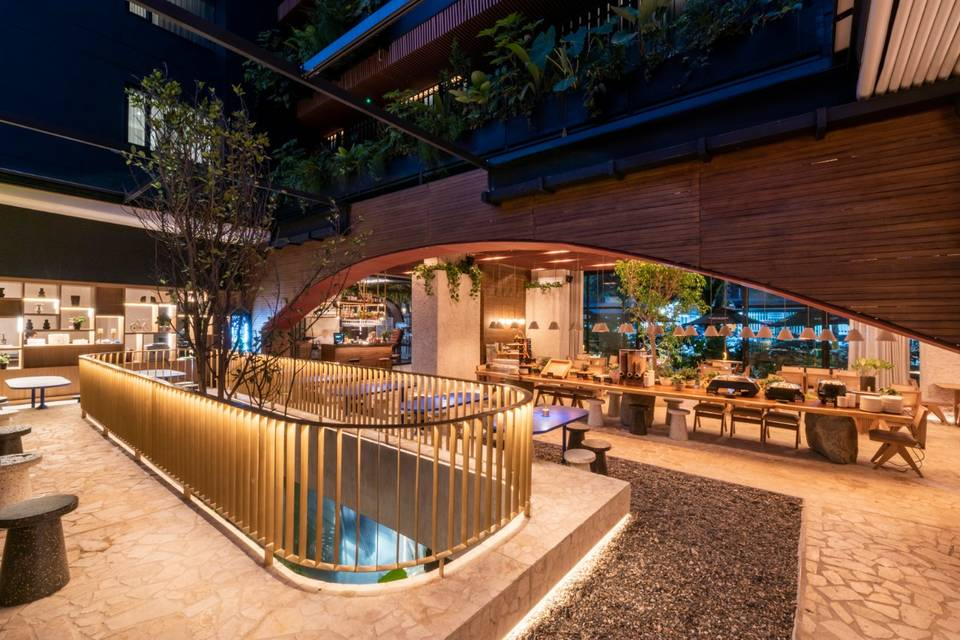Nuestro Personal
Somos un equipo apasionado que trabaja en sintonía para darte lo mejor. Conoce a nuestros chefs, maestros en el arte culinario, y al personal de sala, quienes son los encargados de recibirte con una sonrisa. Creemos que el servicio excepcional y la dedicación de cada persona es lo que realmente transforma una comida en una celebración memorable. ¡Estamos listos para atenderte!
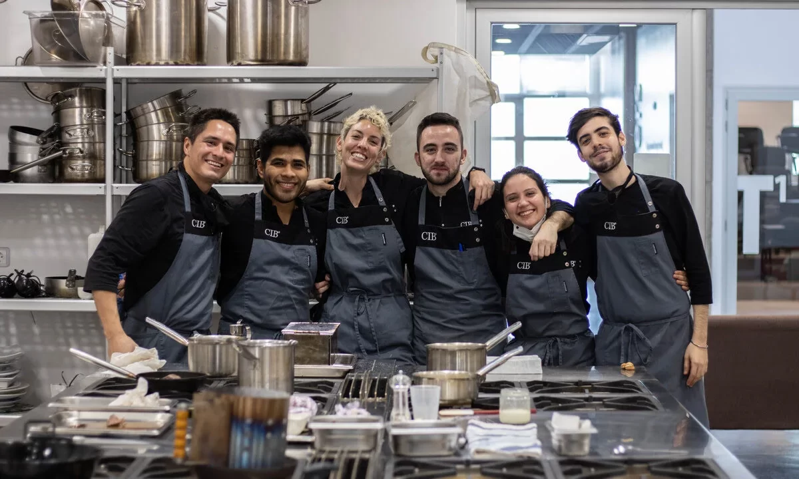¡Ingredientes frescos!
Nuestra promesa es simple: usar solo los ingredientes más frescos y de la más alta calidad. En esta sección, te mostramos el alma de nuestros platos: los productos de temporada, la selección artesanal de nuestros proveedores locales y el cuidado proceso de elaboración que convierte estas materias primas en arte comestible. Aquí reside la diferencia que puedes saborear.
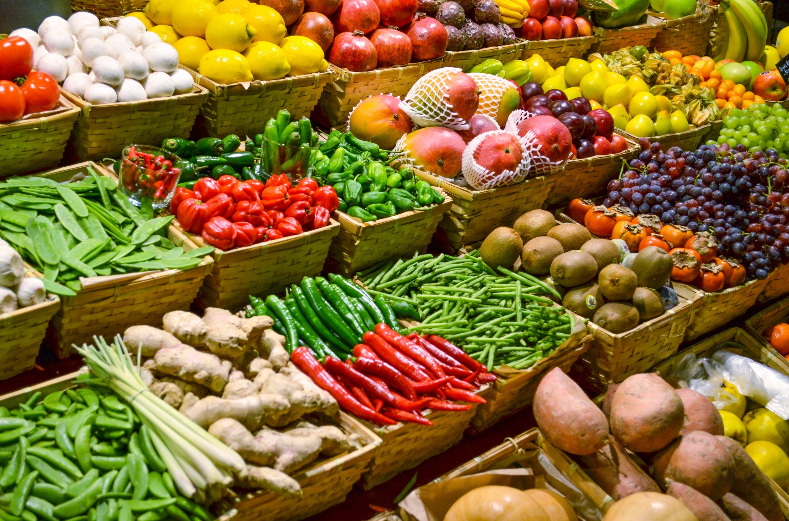 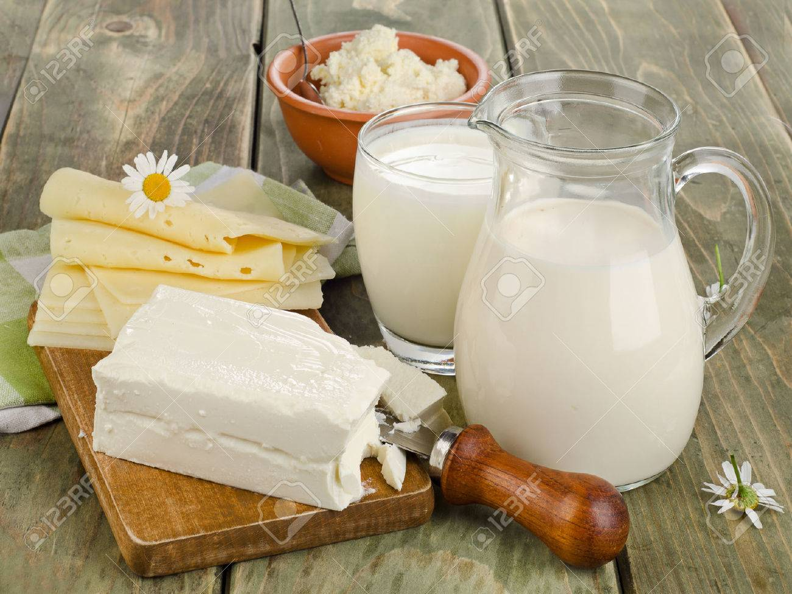 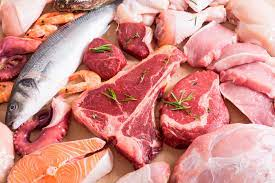Algunos de nuestros platos
Aunque el menú describe el sabor, esta galería muestra el arte. Aquí capturamos la esencia de nuestros platos más emblemáticos: la precisión en el montaje, la explosión de color y la frescura inigualable de cada ingrediente. Cada fotografía es un adelanto visual de la experiencia que te espera, invitándote a deleitarte no solo con el gusto, sino también con la maestría con la que son creados.
 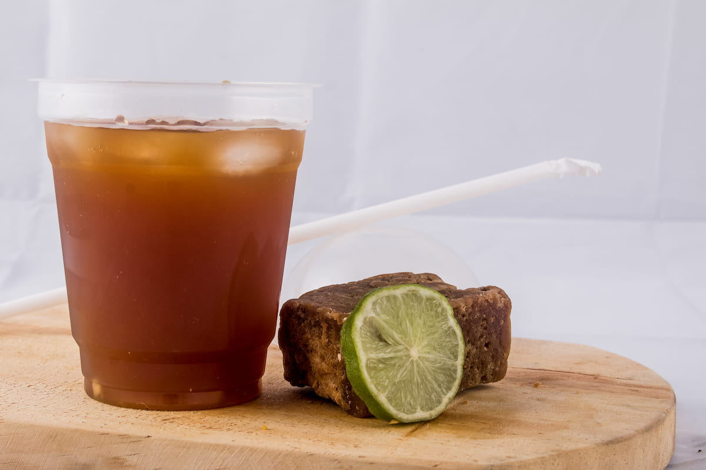
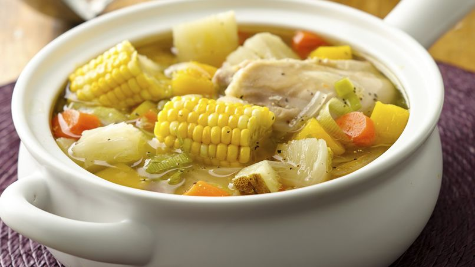
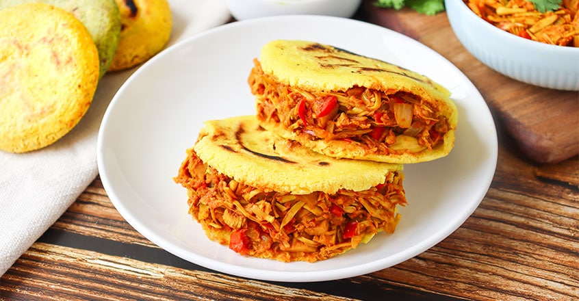
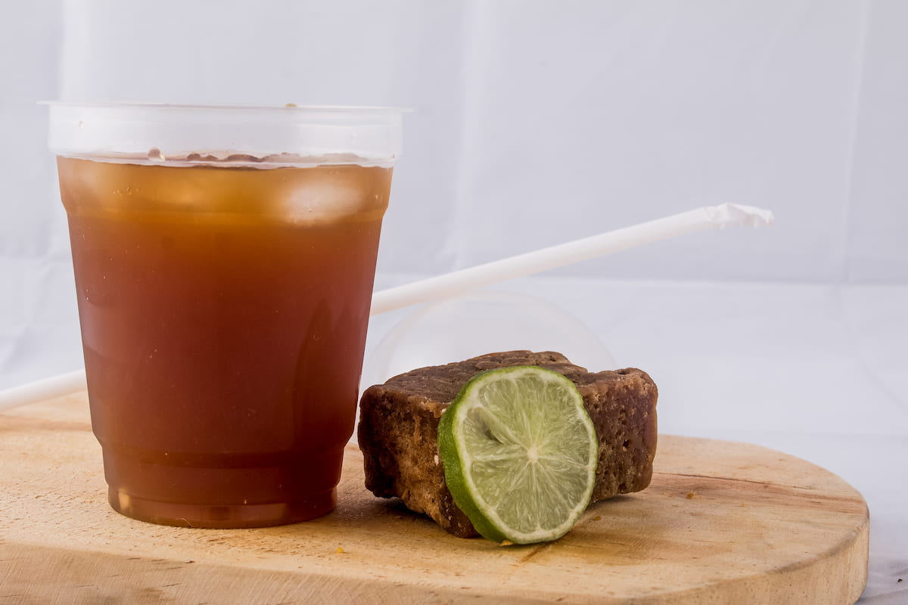
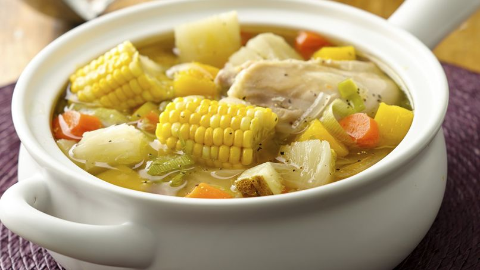
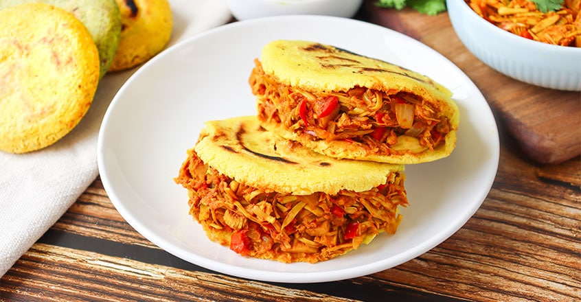